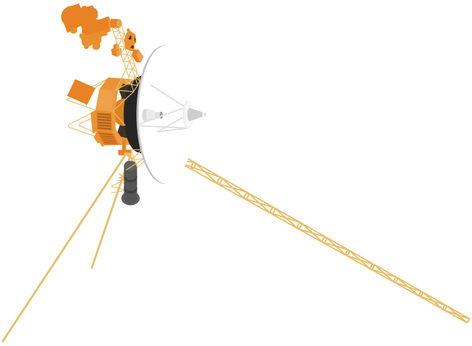
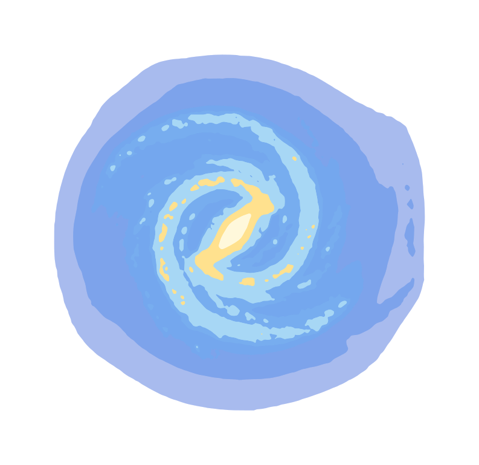

/Space
/Space
Things which are happening in space right now!

The International Space Station has traveled
0kilometers
0 miles 8km per second
Voyager 1 has traveled
0kilometers
0 miles 17km per secondVoyager 2 has traveled
0kilometers
0 miles 15km per second
The Milky Way has traveled
0kilometers
0 miles 583km per second
0
supernovas have occurred
698 per second
Earth has rotated
0degrees
0.25 per minuteMore Streams

Things which are happening all around the world right now!

Things which are happening in nature right now!

Things which are happening with technology right now!

Things which are happening with you right now!
This stream shows how many things are happening in space RIGHT NOW! This stream includes:
The distance the International Space Station (ISS) travels every second
The distance Voyager 1 travels every second
The distance Voyager 2 travels every second
The distance the Milky Way travels every second
The amount of supernovas which occur every second
The number of degrees Earth rotates every minute
Do you enjoy 100% free visualizations with no ads?
Consider donating!